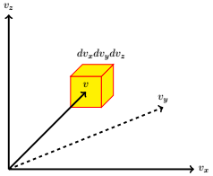
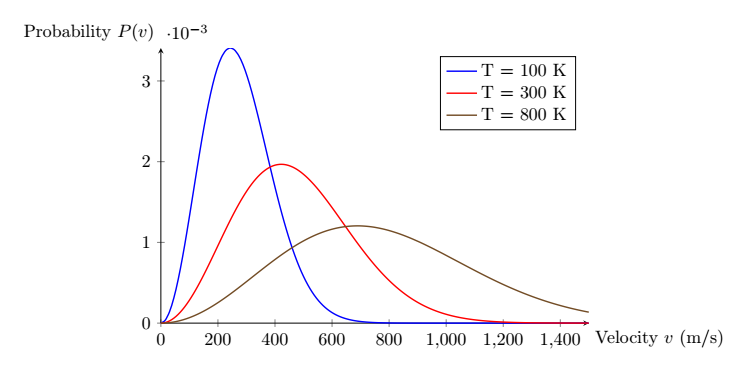

Section 1.4 Maxwell-Boltzmann Velocity Distribution
The Maxwell-Boltzmann distribution describes the distribution of speeds of particles in an ideal gas at a given temperature. It is based on the following assumptions:
-
The gas consists of a large number of identical non-interacting particles, moving with a speed much less than the speed of light.
-
The motion of the particles is random, and the system is in thermal equilibrium at temperature T.
-
The gas is in a three- dimensional space.

It tells us what fraction of molecules have velocities with a particular magnitude and direction. In classical statistical mechanics, the probability \(P(E)\) of a particle having a certain energy \(E\) in a system is given by the Boltzmann factor:
\begin{equation*}
P(E) \propto e^{-E / kT}
\end{equation*}
where \(k\) is the Boltzmann constant and \(T\) is the absolute temperature. For a single particle in an ideal gas, the only energy is kinetic:
\begin{equation*}
E = \frac{1}{2}mv^2 = \frac{1}{2} m (v_x^2 + v_y^2 + v_z^2)
\end{equation*}
where \(m\) is the mass of the particle and \(v\) is its velocity. So the joint probability density is:
\begin{equation*}
P(v_x, v_y, v_z) \propto e^{-\frac{m}{2kT} (v_x^2 + v_y^2 + v_z^2)}
\end{equation*}
Because the exponent is a sum of independent terms, the joint distribution factors:
\begin{equation*}
P(v_x, v_y, v_z) = C. P(v_x)P(v_y)P(v_z)
\end{equation*}
where \(P(v_i) \propto exp(- \beta \frac{m}{2} v_i^2)\text{,}\) with \(\beta = \frac{1}{kT}\text{.}\) To normalize one component (e.g., \(v_x\)):
\begin{equation*}
\int_{-\infty}^{\infty} P(v_x) dv_x = 1
\end{equation*}
gives us the normalization constant \(C\text{.}\) This is a standard Gaussian integral. Let a = m/(2kT):
\begin{equation*}
\int_{-\infty}^{\infty} e^{-a v_x^2} dv_x = \sqrt{\frac{\pi}{a}}
\end{equation*}
So the normalized distribution for one component is:
\begin{equation*}
P(v_x) = \sqrt{\frac{m}{2\pi kT}} e^{-\frac{m}{2kT} v_x^2}
\end{equation*}
and the joint distribution is:
\begin{equation*}
P(v_x, v_y, v_z) = \left( \frac{m}{2\pi kT} \right)^{3/2} e^{-\frac{m}{2kT} (v_x^2 + v_y^2 + v_z^2)}
\end{equation*}
The speed distribution (the distribution of the magnitude of the velocity) can be found by converting to spherical coordinates in velocity space and integrating over the angles. The speed \(v\) is given by \(v = \sqrt{v_x^2 + v_y^2 + v_z^2}\text{.}\) The speed distribution is:
\begin{equation*}
P(v) = 4\pi v^2 \left( \frac{m}{2\pi kT} \right)^{3/2} e^{-\frac{m}{2kT} v^2}
\end{equation*}
This distribution is known as the Maxwell-Boltzmann speed distribution. It describes how the speeds of particles in an ideal gas are distributed at a given temperature. The most probable speed, mean speed, and root-mean-square speed can be derived from this distribution.
The shape of the Maxwell-Boltzmann distribution depends on the temperature and the mass of the particles. As the temperature increases, the distribution becomes broader and shifts to higher speeds. As the mass of the particles increases, the distribution becomes narrower and shifts to lower speeds.

With this probability distribution, we can calculate various properties of the gas, such as the average speed, the most probable speed, and the root-mean-square speed. The average speed is given by:
\begin{equation*}
\langle v \rangle = \int_0^\infty v P(v) dv = \sqrt{\frac{8kT}{\pi m}}
\end{equation*}
The most probable speed is given by:
\begin{equation*}
v_{mp} = \sqrt{\frac{2kT}{m}}
\end{equation*}
The root-mean-square speed is given by:
\begin{equation*}
v_{rms} = \sqrt{\langle v^2 \rangle} = \sqrt{\frac{3kT}{m}}
\end{equation*}
These speeds are related by the following inequalities:
\begin{equation*}
v_{mp} \lt \langle v \rangle \lt v_{rms}
\end{equation*}
The Maxwell-Boltzmann distribution is a fundamental result in statistical mechanics and provides a link between the microscopic properties of particles and the macroscopic properties of gases. It is used to derive the ideal gas law and to understand various phenomena in gases, such as diffusion, effusion, and viscosity. It also serves as a basis for more advanced theories of gases, such as quantum statistics and the kinetic theory of gases.
Since molar mass \(M=mN_a\) and gas constant\(R=kN_a\text{,}\) we can also write the Maxwell-Boltzmann speed distribution in terms of the molar mass \(M\) and the gas constant \(R\text{:}\)
\begin{equation*}
P(v) = 4\pi v^2 \left( \frac{M}{2\pi RT} \right)^{3/2} e^{-\frac{Mv^2}{2RT}}
\end{equation*}
This form is often used in chemistry and engineering applications.
The average speed can also be expressed in terms of the molar mass and the gas constant:
\begin{equation*}
\langle v \rangle = \sqrt{\frac{8RT}{\pi M}}
\end{equation*}
The average kinetic energy of a gas molecule depends only on the temperature and is independent of its mass. It is given by:
\begin{equation*}
\langle E_k \rangle = \frac{3}{2} kT = \frac{3}{2} RT/N_a
\end{equation*}
This is a consequence of the equipartition theorem, which states that each degree of freedom contributes an average energy of \(\frac{1}{2} kT\) to the total energy of the system. For a monatomic gas, there are three translational degrees of freedom, so the average kinetic energy is \(\frac{3}{2} k T\text{.}\) For a diatomic gas, there are additional rotational and vibrational degrees of freedom, which contribute to the total energy of the system, so the average kinetic energy per mole is
\begin{equation*}
\, dU = \frac{5}{2} R T\text{.}
\end{equation*}
The Maxwell-Boltzmann distribution is a fundamental result in statistical mechanics and provides a link between the microscopic properties of particles and the macroscopic properties of gases. It is used to derive the ideal gas law and to understand various phenomena in gases, such as diffusion, effusion, and viscosity. It also serves as a basis for more advanced theories of gases, such as quantum statistics and the kinetic theory of gases.
Subsection 1.4.1 Maxwell Speed Distribution

The direction of velocity are equally probable hence the average velocity of a molecule is zero but the average of the square of the velocity is not zero. However, the average speed, which depends only on the magnitude of the velocity, is not zero. The probability of speed in the range \(v, v + dv\) of a molecule regardless of direction is given by
\begin{equation*}
\int_{\theta = 0}^{\pi} \int_{\phi = 0}^{2\pi} P(v) v^2 \sin\theta \, d\theta \, d\phi \, dv = 4\pi P(v)v^2\, dv
\end{equation*}
where the volume element is \(v^2 \sin\theta \, d\theta \, d\phi \, dv\) in spherical coordinates and the probability is written as \(P(v) v^2 \sin\theta \, d\theta \, d\phi \, dv\text{.}\) The quantity \(4\pi P(v)v^2\, dv\) is the probability density for the molecular speed. The probability distribution for molecular speeds can be written explicitly as
\begin{equation*}
f(v)\, dv = 4\pi \left( \frac{M}{2\pi kT} \right)^{3/2} e^{\left(-\frac{Mv^2}{2kT}\right)} v^2 \, dv
\end{equation*}
This graphs show that there are a few molecules with very low speeds and a few with large speeds at any perticular temperature; we can also see that f(v) becomes broader as T increases. The speed \(v\) at which \(f(v)\) reaches its maximum is the most probable speed.